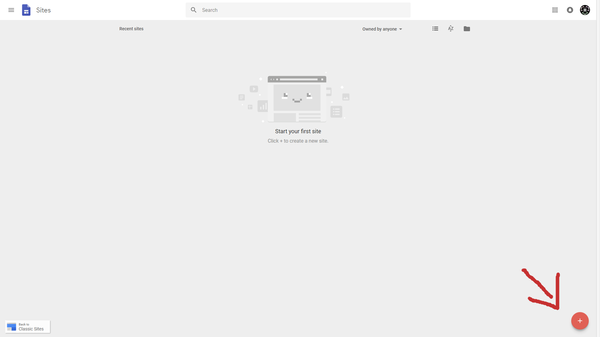
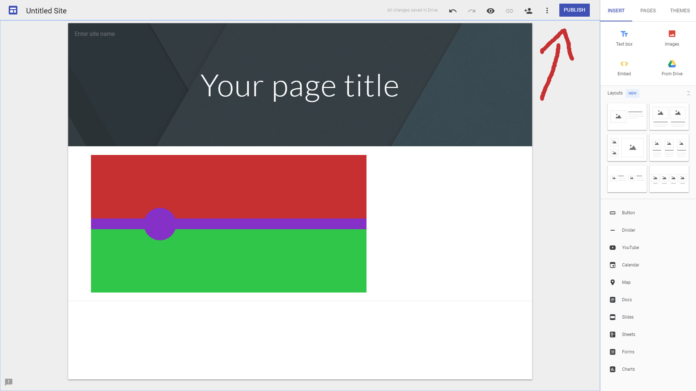
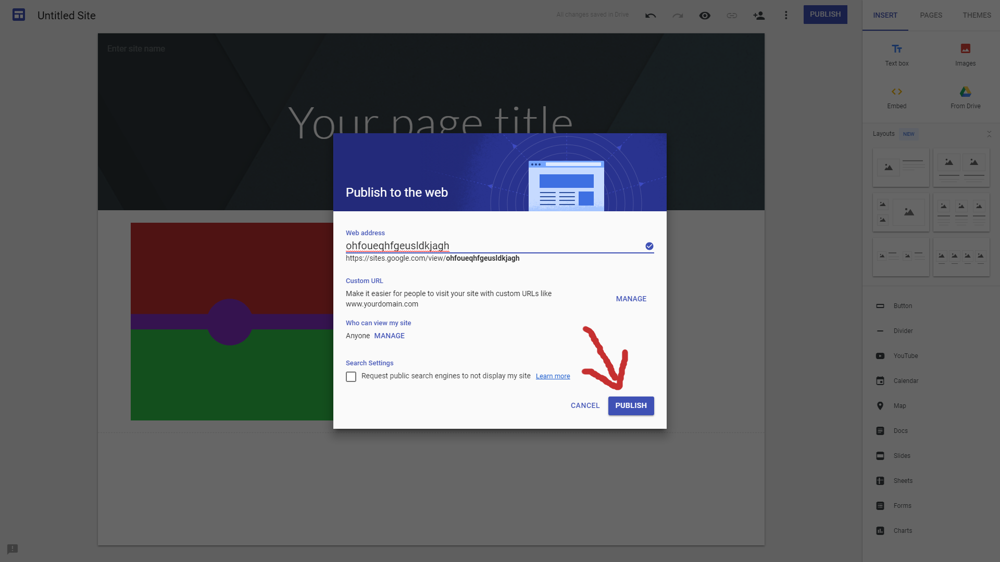
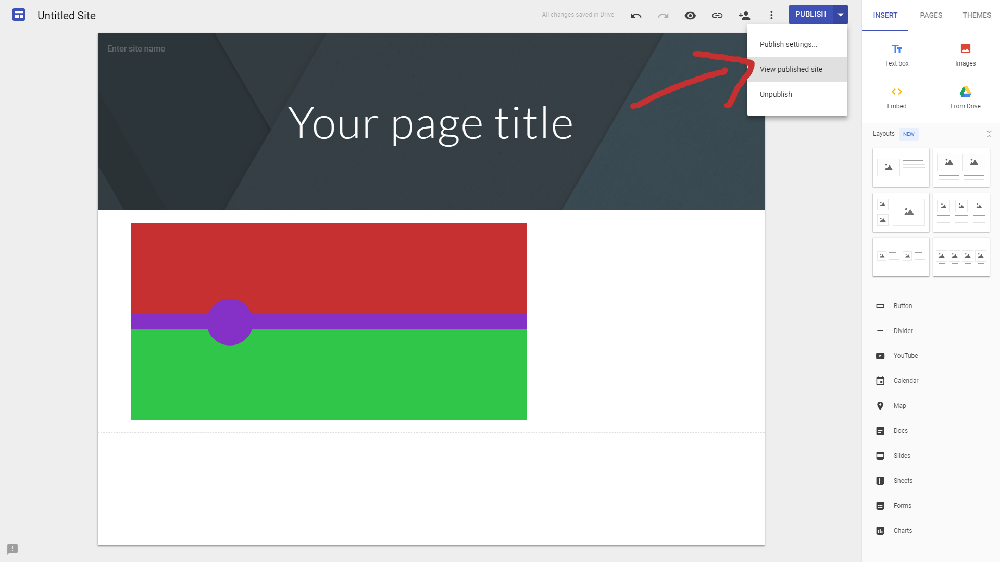

Step 1: Right click the image below and save it to your computer. This is the default skin.

Step 2: Edit the image using a program on your computer. Example:

Step 3: Go to Google Sites and create a new site.
Step 4: Click publish.
Step 5: Give it a URL (it will never be seen by other players, so it doesn't really matter), then click publish.
Step 5: Click the arrow next to publish, then view published site.
Step 6: Right click the skin image, then click copy image address. You should be able to paste that into where it says "Skin Image URL" in-game.
To get back to this site, just sign back into Google Sites with the same account and you should be able to find it. Or you know, bookmark it or something.
You can also use any image off of the Internet by doing the same right click/copy image address as in step 6, but it might get distorted since it expects a 2:1 image.